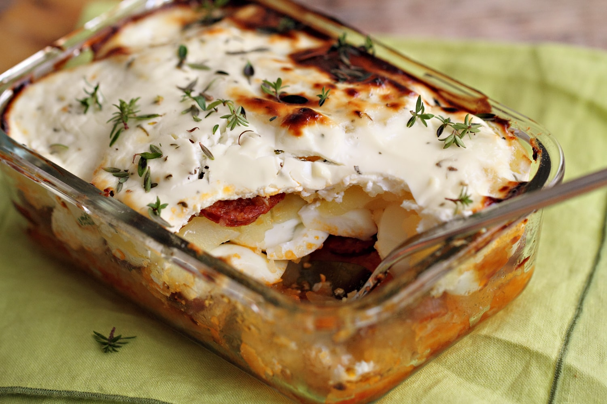

Főzés
Mi tudna jobban feldobni egy kültéri találkozót, ha nem egy bográcsozás?
Sütés
Bármilyen alkalomra készül, nem marad panasz rájuk.
Sütik
A főételek, családi, baráti találkozók, kecsegtető, krémes koronái
Mi tudna jobban feldobni egy kültéri találkozót, ha nem egy bográcsozás?
Bármilyen alkalomra készül, nem marad panasz rájuk.
A főételek, családi, baráti találkozók, kecsegtető, krémes koronái